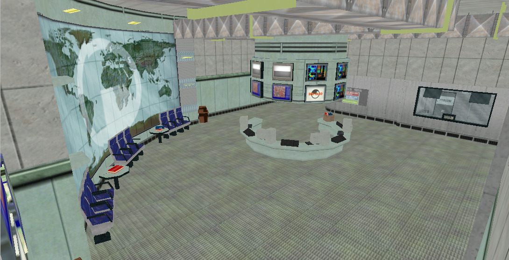
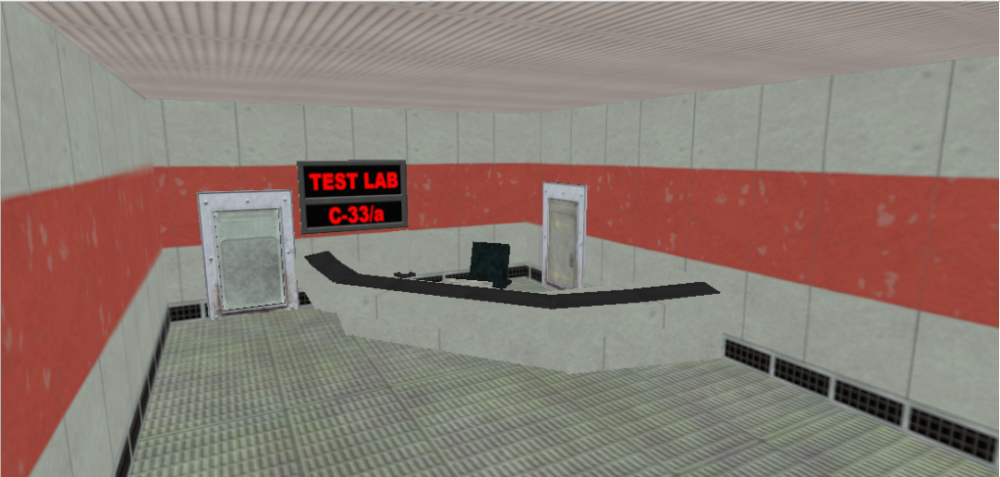
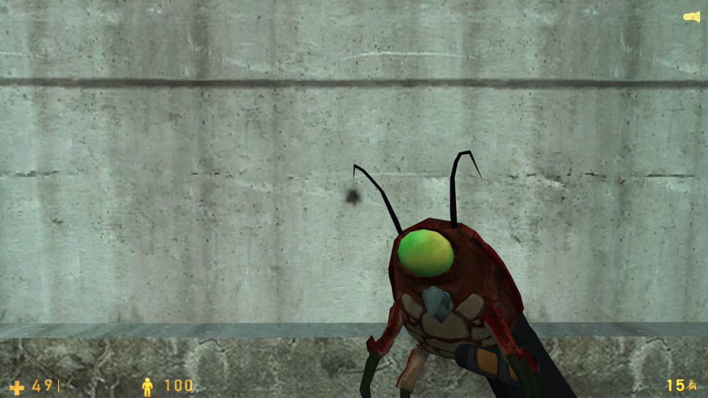

Turns out there’s now even a remake of Black Mesa in GoldSrc (yes, you heard us correctly).
Black Mesa: Classic is a WIP mod that aims to recreate the entirety of Black Mesa in the GoldSrc engine - A demake of a remake you could say… *Inception horn*